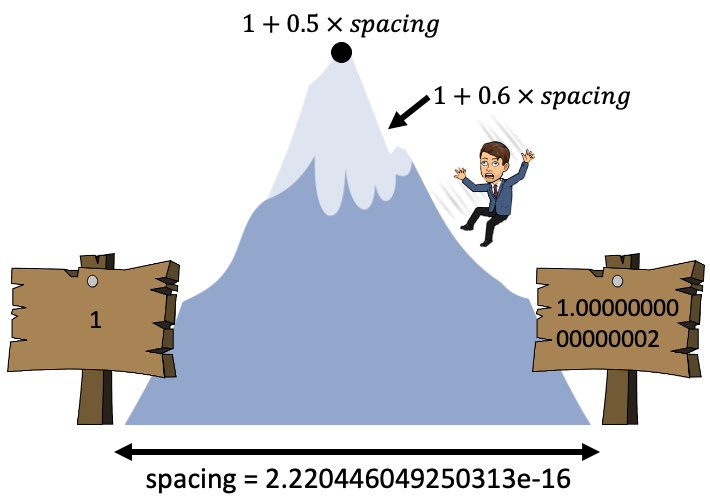

Lecture 1: Floating Point Numbers¶
Tomas Beuzen, January 2021

Lecture Outline¶
Lecture Learning Objectives¶
Compare and contrast the representations of integers and floating point numbers
Explain how double-precision floating point numbers are represented by 64 bits
Identify common computational issues caused by floating point numbers, e.g., rounding, overflow, etc.
Calculate the “spacing” of a 64 bit floating point number in Python
Write code defensively against numerical errors
Use
numpy.iinfo()/numpy.finfo()to work out the possible numerical range of an integer or float dtype
1. Floating Point Errors¶
Unfortunately, computers can not always represent numbers as accurately as some of us might think
The problem boils down to this: we have a finite amount of bits in our computer to store an infinite amount of numbers
This inevitably leads to precision errors as we’ll explore in this lecture
Some motivating examples:
0.1 + 0.2 == 0.3
False
1e16 + 1 == 1e16
True
In this lecture, we are going to take a journey to discover why this happens!
2. Binary Numbers and Integers¶
We are used to using a base-10 number system (i.e., “decimal” or “denary”)
For example, we can read the number 104 as:
4 x 1 (\(10^0\))
0 x 10 (\(10^1\))
1 x 100 (\(10^2\))
Or in a tabular format:
Unit |
\(10^2\) |
\(10^1\) |
\(10^0\) |
|---|---|---|---|
Value |
100 |
10 |
1 |
Number of units |
1 |
0 |
4 |
Total |
100 |
0 |
4 |
Many of you will be aware that computers use a base-2 system (i.e., “binary”) to store data
Binary is based on powers of 2 rather than powers of 10 and we only have two numbers (0 and 1) to work with (think of them as “off” and “on” switches respectively)
If you’re interested in learning more about how computers work under the hood, check out this excellent Youtube series on computer science by CrashCourse
In binary, 104 looks like:
f"{104:b}" # I'm using the python f-string format code "b" to display my integer in binary
'1101000'
So this is:
Unit |
\(2^6\) |
\(2^5\) |
\(2^4\) |
\(2^3\) |
\(2^2\) |
\(2^1\) |
\(2^0\) |
|---|---|---|---|---|---|---|---|
Value |
64 |
32 |
16 |
8 |
4 |
2 |
1 |
Number of units |
1 |
1 |
0 |
1 |
0 |
0 |
0 |
Total |
64 |
32 |
0 |
8 |
0 |
0 |
0 |
We call these single binary 0/1 values, bits
So we needed 7 bits to represent the number 104
We can confirm using the
.bit_length()integer method
x = 104
x.bit_length()
7
Here are the first 10 positive integers in binary (using 4 bits):
print("DECIMAL | BINARY")
print("================")
for _ in range(11):
print(f" {_:02} | {_:04b}")
DECIMAL | BINARY
================
00 | 0000
01 | 0001
02 | 0010
03 | 0011
04 | 0100
05 | 0101
06 | 0110
07 | 0111
08 | 1000
09 | 1001
10 | 1010
And a useful GIF counting up in binary to drive the point home:

Source: futurelearn.com
Any integer can be represented in binary (if we have enough bits)
The range of unsigned integers we can represent with
Nbits is: 0 to \(2^{N}-1\)We often reserve one bit to specify the sign (- or +) of a number, so the range of signed integers you can represent with
Nbits is: \(-2^{N-1}\) to \(2^{N-1}-1\)For example, with 8 bits we can represent the unsigned integers 0 to 255, or the signed integers -128 to 127:
bits = 8
print(f"unsigned min: 0")
print(f"unsigned max: {2 ** bits - 1}\n")
print(f"signed min: {-2 ** (bits - 1)}")
print(f"signed max: {2 ** (bits - 1) - 1}")
unsigned min: 0
unsigned max: 255
signed min: -128
signed max: 127
We can confirm all this with the numpy function
np.iinfo():
np.iinfo("int8") # use np.iinfo() to check out the limits of a dtype
iinfo(min=-128, max=127, dtype=int8)
np.iinfo("uint8") # "uint8" is an unsigned 8-bit integer, so ranging from 0 to 2^7
iinfo(min=0, max=255, dtype=uint8)
Depending on the language/library you’re using, you may get an error or some other funky behaviour if you try to store an integer smaller/larger than the allowable
In the case of
numpy, it will loop around and continue counting from the upper/lower limit
np.array([-87, 31], "int8") # this is fine as all numbers with the allowable range of int8
array([-87, 31], dtype=int8)
np.array([-129, 128], "int8") # these numbers are outside the allowable range!
array([ 127, -128], dtype=int8)
To store the above, we need more bits (memory)
For example, 16 bits will be more than enough:
np.array([-129, 128], "int16")
array([-129, 128], dtype=int16)
You often see bits in multiples of 8 (e.g., 8, 16, 32, 64, etc)
8 bits is traditionally called 1 “byte”
Note that the Python default
inthas 64-bits, so a range of \(-2^{63}\) to \(2^{63} - 1\). But Python is special in that it can dynamically allocate more memory to hold your integer if needed, but that’s not really important for us right now.
x = 2 ** 64
x
18446744073709551616
x.bit_length()
65
ü§î
3. Fractional Numbers in Binary¶
At this point you might be thinking, “Well that’s all well and good for integers, but what about fractional numbers like 14.75 Tom?” - Good question!
Let’s interpret the number 14.75 in our familiar decimal format
Unit |
\(10^1\) |
\(10^0\) |
\(10^{-1}\) |
\(10^{-2}\) |
|---|---|---|---|---|
Value |
10 |
1 |
0.1 |
0.01 |
Number of units |
1 |
4 |
7 |
5 |
Total |
10 |
4 |
0.7 |
0.05 |
That seems pretty natural, and in binary it’s much the same!
Anything to the right of the decimal point (now called a “binary point”) is treated with a negative exponent
So in binary, 14.75 would look like this: 1110.11
Let’s break that down:
Unit |
\(2^3\) |
\(2^2\) |
\(2^1\) |
\(2^0\) |
\(2^{-1}\) |
\(2^{-2}\) |
|---|---|---|---|---|---|---|
Value |
8 |
4 |
2 |
1 |
0.5 |
0.25 |
Number of units |
1 |
1 |
1 |
0 |
1 |
1 |
Total |
8 |
4 |
2 |
0 |
0.5 |
0.25 |
4. Fixed Point Numbers¶
As we learned earlier, we typically have a fixed number of bits to work with when storing a number, e.g., 8, 16, 32, 64 bits etc.
How do we decide where to put the binary point to allow for fractional numbers?
With 8 bits, we could put 4 bits on the left and 4 on the right:
Unit |
\(2^3\) |
\(2^2\) |
\(2^1\) |
\(2^0\) |
\(2^{-1}\) |
\(2^{-2}\) |
\(2^{-3}\) |
\(2^{-4}\) |
|---|---|---|---|---|---|---|---|---|
Value |
8 |
4 |
2 |
1 |
0.5 |
0.25 |
0.125 |
0.0625 |
In this case, the largest and smallest (closest to 0) numbers we could represent in the unsigned case are:
(2.0 ** np.arange(-4, 4, 1)).sum()
15.9375
2 ** -4
0.0625
But what if we wanted to represent numbers larger than this?
We could shift the binary point right, so we have 6 on the left and 2 on the right, then our range would be:
(2.0 ** np.arange(-2, 6, 1)).sum()
63.75
2 ** -2
0.25
We get this trade-off between being able to represent large numbers and small numbers
What if we want to represent both very large and very small numbers? Read on…
5. Floating Point Numbers¶
At this point, you may have read “floating point” and had a little “ah-ha!” moment because you see where we’re going
Rather than having a fixed location for our binary point, we could let it “float” around depending on what number we want to store
Recall “scientific notation”, which for the number 1234 looks like \(1.234 \times 10^3\), or for computers we usually use
efor shorthand:
f"{1234:.3e}"
'1.234e+03'
The “exponent” controls the location of the decimal point
Consider the following numbers:
\(1.234 \times 10^0 = 1.234\)
\(1.234 \times 10^1 = 12.34\)
\(1.234 \times 10^2 = 123.4\)
\(1.234 \times 10^3 = 1234.\)
See how by changing the value of the exponent we can control the location of the floating point and represent a range of values?
We’ll be using the exact same logic with the binary system to come up with our “floating point numbers”
This is floating point format:
\(M\) = “mantissa”
\(E\) = “exponent”
Note that the \(.\) is a “binary point”, digits on the left are 2’s with +ve exponents, digits on the right are 2’s with negative exponents
Consider the number 10
\(10 = 1.25 \times 8 = 1.25 \times 2^3\)
So \(M=.25\) and \(E=3\)
But we want binary, not decimal, so \(M=01\) and \(E=11\)
Therefore, 10 in floating point is: \(1.01 \times 2^{11}\)
This is where the magic happens, just as the exponent of 10 in scientific notation defines the location of the decimal point, so too does the exponent of a floating point number define the location of the binary point
For \(1.01 \times 2^{11}\), the exponent is 11 in binary = 3 in decimal, so move the binary point three places to the right: \(1.01 \times 2^{11} = 1010.\)
What is 1010 in binary?
int("1010", base=2)
10
It’s 10 of course!
How cool is that - we now have this “floating point” data type that uses an exponent to help us represent both small and large fractional numbers (unlike fixed point where we would have to choose one or the other!)
I wrote a function
binary()to display any number in floating point format:
binary(10)
Decimal: 1.25 x 2^3
Binary: 1.01 x 2^11
Sign: 0 (+)
Mantissa: 01 (0.25)
Exponent: 11 (3)
Let’s try the speed of light: \(2.998 \times 10 ^ 8 m/s\)
binary(2.998e8)
Decimal: 1.11684203147888184 x 2^28
Binary: 1.0001110111101001010111 x 2^11100
Sign: 0 (+)
Mantissa: 0001110111101001010111 (0.11684203147888184)
Exponent: 11100 (28)
A mole: \(6.02214076 \times 10^{23} particles\)
binary(6.02214076e23)
Decimal: 1.9925592330949422 x 2^78
Binary: 1.1111111000011000010111001010010101111100010100010111 x 2^1001110
Sign: 0 (+)
Mantissa: 1111111000011000010111001010010101111100010100010111 (0.9925592330949422)
Exponent: 1001110 (78)
Planck’s constant: \(6.62607004 \times 10^{-34} m^2 kg / s\)
binary(6.62607004e-34)
Decimal: 1.720226132656187 x 2^-111
Binary: 1.1011100001100000101111010110010101111011100111100001 x 2^-1101111
Sign: 0 (+)
Mantissa: 1011100001100000101111010110010101111011100111100001 (0.720226132656187)
Exponent: -1101111 (-111)
You get the point, we can represent a wide range of numbers with this format! (we’ll work out the exact range later on)
5.1. Floating Point Standard¶
One question you might have about the above: how many bits should I use for the mantissa and how many for the exponent?
Well that’s already been decided for you in: IEEE Standard for Floating-Point Arithmetic (IEEE 754) which is what most computers/software use
You’ll mostly be using the data types
float64andfloat32Float 64 (also called “double precision”)
53 bits for the mantissa
11 bits for the exponent
Float 32 (also called “single precision”)
24 bits for the mantissa
8 bits for the exponent
6. Spacing and Rounding Errors¶
6.1. Ingredient 1: Rounding Errors¶
Many fractional numbers can’t be represented exactly using binary
Instead, your computer will round numbers to the closest representable number and we get rounding errors
For example 0.1 can’t be exactly represented in binary (feel free to try and make 0.1 using floating point format).
Python usually hides this fact for us out of convenience, but here is “the real 0.1”:
f"{0.1:.60f}"
'0.100000000000000005551115123125782702118158340454101562500000'
So 0.1 is actually represented as a number slightly bigger than 0.1!
I wrote a function to work out if a number is stored exactly or inexactly, and to show the rounding error:
float_rep(0.1)
You entered: 0.1
Which is inexactly stored as: 0.1000000000000000055511151231257827021181583404541015625
float_rep(0.25)
You entered: 0.25
Which is exactly stored as: 0.25
Read more about float representation in the Python docs here.
6.2. Ingredient 2: Spacing¶
So how bad are these rounding errors? Let’s find out…
We can quantify the “spacing” between representable numbers
Imagine we’re in the decimal system again. For a number with a fixed amount of significant digits, the spacing between that number and the next biggest number with the same format can be determined as the smallest significant digit multipled by the exponent:
Number |
Next Largest |
Spacing |
|---|---|---|
8.982e0 |
8.983e0 |
0.001e0 = 0.001 |
0.001e1 |
0.002e1 |
0.001e1 = 0.01 |
3.423e2 |
3.424e2 |
0.001e2 = 0.1 |
Same goes for our binary floating point numbers!
The spacing can be determined as the smallest part of the mantissa multiplied by a number’s exponent
What is the smallest part of the mantissa?
For
float64, we have 53 bits for the mantissa, 1 bit is reserved for the sign, so we have 52 left, therefore the smallest significant digit is \(2^{-52}\)To be super clear, here is the floating point format written as powers of 2 for all 52 mantissa bits and 11 exponent bits:
See how \(2^{-52}\) is the smallest value we can change?
Consider the number 1 in binary:
binary(1.0)
Decimal: 1.0 x 2^0
Binary: 1.0 x 2^0
Sign: 0 (+)
Mantissa: 0 (0.0)
Exponent: 0 (0)
As you can see, the number 1 has has an exponent of 0
Remember the smallest significant digit scaled by our exponent gives us the spacing between this number, and the next number we can represent with our format
So for the number 1, the spacing is \(2^{-52} * 2^0\)
(2 ** -52) * (2 ** 0)
2.220446049250313e-16
Numpy has a helpful function we can use to calculate spacing
np.nextafter(x1, x2)returns the next representable floating-point value afterx1towardsx2The next representable number after 1 should be 1 plus the spacing above, let’s check:
np.nextafter(1, 2)
1.0000000000000002
spacing = np.nextafter(1, 2) - 1
spacing
2.220446049250313e-16
spacing == (2 ** -52) * (2 ** 0)
True
If you do a calculation that puts you somewhere between the space of two numbers, the computer will automatically round to the nearest one
I like to think of this as a mountain range in the computer
In the valleys are representable numbers, if a calculation puts us on a mountain side, we’ll roll down the mountain to the closest valley
For example, spacing for the number 1 is \(2^{-52}\), so if we don’t add at least half that, we won’t reach the next representable number:
1 + 0.4 * spacing == 1 # add less than half the spacing
True

1 + 0.6 * spacing == 1 # add a more than half the spacing
False

We’re working with pretty small numbers here so you might not be too shocked
But remember, the bigger our exponent, the bigger our rounding errors will be!
large_number = 1e25
binary(large_number)
Decimal: 1.03397576569128469 x 2^83
Binary: 1.0000100010110010101000101100001010000000001010010001 x 2^1010011
Sign: 0 (+)
Mantissa: 0000100010110010101000101100001010000000001010010001 (0.03397576569128469)
Exponent: 1010011 (83)
The exponent is 83 so the spacing should be:
spacing = (2 ** -52) * (2 ** 83)
print(f"{spacing:.5e}")
2.14748e+09
1 billion is less than half that spacing, so if we add it to
large_number, we won’t cross the mountain peak, and we’ll slide back down into the same valley:
one_billion = 1e9
1e25 + one_billion == 1e25 # adding a billion didn't change our number!
True
2 billion is more than half that spacing, so if we add it to
large_number, we’ll slide into the next valley (representable number):
two_billion = 2e9
1e25 + two_billion == 1e25 # adding two billion (more than half the spacing) did change our number
False
Another implication of having a finite amount of floating numbers to represent an infinite number system is that two numbers may share the same representation in memory
For example, these are all
True:
0.99999999999999999 == 1
True
1.00000000000000004 == 1
True
1.00000000000000009 == 1
True
This is pretty intuitive is you think about the “Floating Point Mountain Range”
No matter what number you are, if you don’t pass over the peak to your left or right, you’ll roll back down to the valley!
And also remember, the bigger the number, the bigger the spacing/rounding errors!

7. Lecture Exercise: Fun with Floating Points¶
7.1. Floating Point Range¶
Recall that most compute environments you’ll encounter will be using IEEE double precision (
float64), so 53 bits for the mantissa, 11 for the exponent.So let’s calculate the biggest possible floating point number based on this scheme.
Recall that if we have 11 bits for the exponent then the signed range of possible values is: \(-2^{N-1}\) to \(2^{N-1}-1\), and the largest value is:
bits = 11
max_exponent = 2 ** (bits - 1) - 1
max_exponent
1023
For
float64the maximum mantissa can be calculated as the sum of all 52 bits from (\(2^{-1}\) to \(2^{-52}\)):
max_mantissa = (2.0 ** np.arange(-1, -53, -1)).sum()
max_mantissa
0.9999999999999998
Therefore the maximum float we can represent is (remember our format is \(1.M \times 2 ^ E\)):
(1 + max_mantissa) * 2 ** max_exponent
1.7976931348623157e+308
Let’s confirm using the
numpyfunctionnp.finfo():
np.finfo(np.float64).max
1.7976931348623157e+308
Looks good to me!
What happens if we try to make a number bigger than this?
10 ** 309.0
---------------------------------------------------------------------------
OverflowError Traceback (most recent call last)
<ipython-input-47-042b824954e2> in <module>
----> 1 10 ** 309.0
OverflowError: (34, 'Result too large')
Or in
numpy, it throws a warning and defaults toinf:
np.power(10, 309.0)
/opt/miniconda3/envs/mds572/lib/python3.7/site-packages/ipykernel_launcher.py:1: RuntimeWarning: overflow encountered in power
"""Entry point for launching an IPython kernel.
inf
Now let’s do the minimum value
The minimum value will be the minimum mantissa multiplied by the minimum exponent
The minimum mantissa is 0 (all bits sets to 0)
You might think the minimum exponent is \(-2^{10}=-1024\) just as we’ve discussed through this lecture, but there are some bit patterns reserved for “special numbers” (like 0) which effectively reduce the minimum exponent to \(-1022\) (this is not important to know but you can read more here)
So the minimum value is actually:
1.0 * 2 ** -1022
2.2250738585072014e-308
You don’t need to worry about this derivation too much, after all
numpycan help!
np.finfo(np.float64).minexp # minimum exponent value
-1022
np.finfo(np.float64).tiny # smallest possible positive value
2.2250738585072014e-308
(Optional) 7.1.1 Subnormal Numbers¶
What happens if we try to store a number smaller than the above?
2 ** -1024
5.562684646268003e-309
Um, it worked‚Ķ ü§î
Remember how I discussed “special cases” earlier? One of these is “subnormal numbers”
This is well beyond the scope of the course, but briefly, subnormal numbers help us fill the gap between 0 and \(2^{-1022}\)
If the exponent is set to it’s minimum value, then we can play with our bits (that’s not meant to sound dirty), and instead of the mantissa starting with a 1, we can start it with a 0
This gives our mantissa a minimum value of \(2^{-52}\) (rather than 1, which is what we had before)
So the smallest subnormal number we can have is \(2^{-52} \times 2 ^ {-1022} = 2 ^ {-1074}\):
2 ** -1074
5e-324
Anything less than this is rounded to 0:
2 ** -1075
0.0
You can read more in this article and this stackoverflow post, but as I said, this is beyond the scope of the course.
7.2. Order of Operations¶
Consider the following:
1e16 + 1 + 1 == 1 + 1 + 1e16
False
What’s up with that?
Let’s break it down…
First the spacing of
1e16is:
calc_spacing(1e16)
2.0
1e16 + 1 == 1e16
True
So the above should make sense, we aren’t adding more than half the spacing, so we remain at
1e16But what about this:
1e16 + (1 + 1) == 1e16
False
This time we added
(1 + 1), which is2, and we got aFalseas expectedBut now let’s remove the parentheses:
1e16 + 1 + 1 == 1e16
True
Back to
True, what’s going on…Well we have an “order of operations” here, the
1e16 + 1happens first, which is just1e16, and then we try add1again but the same thing happensWhat do you think will happen with this one?
1 + 1 + 1e16 == 1e16
False
This time, the
1 + 1happened first, which is2, and then we add1e16
7.3. Writing Functions¶
Later in this course we’ll create a Logistic Regression model from scratch and you’ll have to calculate something that looks like:
Looks pretty harmless right?
def log_1_plus_exp(z):
return np.log(1 + np.exp(z))
But what happens if
zis large? Say, 1000:
log_1_plus_exp(1000)
/opt/miniconda3/envs/mds572/lib/python3.7/site-packages/ipykernel_launcher.py:2: RuntimeWarning: overflow encountered in exp
inf
We get an overflow error when
zinexp(z)is large!In fact, we can find out what the limit of
zis:
max_float = np.finfo(np.float64).max
np.log(max_float)
709.782712893384
If we pass anything bigger than that into
np.exp()we’ll get an overflow errorHowever, you might know that for \(z >> 1\):
e.g.:
z = 100
np.log(1 + np.exp(z))
100.0
We can use this to account for the overflow error:
@np.vectorize # decorator to vectorize the function
def log_1_plus_exp_safe(z):
if z > 100:
print(f"Avoiding overflow error with approximation of {z:.0f}!")
return z
else:
return np.log(1 + np.exp(z))
log_1_plus_exp_safe([1, 10, 200, 500])
Avoiding overflow error with approximation of 200!
Avoiding overflow error with approximation of 500!
array([ 1.31326169, 10.0000454 , 200. , 500. ])
Cool! We combined math + CS + our brains to write better code! You’ll explore this more in Lab 1
But note that this is part of the reason we use libraries like
numpy,scipy,scikit-learn, etc. They’ve taken care of all of this for you!
7.4. Precision vs Memory vs Speed¶
So double precision floats are pretty standard and require 64 bits to store:
np.float64().nbytes # number of bytes consumed by a float64
8
np.float64().nbytes * 8 # recall 1 byte = 8 bits
64
When dealing with huge datasets or models with millions or billions of parameters it may be desirable to lower the precision of our numbers to use less memory and/or gain speed
x64 = np.random.randn(1000, 1000)
print(f"array size: {x64.shape}")
print(f"array type: {x64.dtype}")
print(f"mem. usage: {x64.nbytes * 8 / (1000 * 1000)} MB")
array size: (1000, 1000)
array type: float64
mem. usage: 64.0 MB
x32 = x64.astype('float32')
print(f"array type: {x32.dtype}")
print(f"mem. usage: {x32.nbytes * 8 / (1000 * 1000)} MB")
array type: float32
mem. usage: 32.0 MB
Below I’m squaring the elements of my two arrays. They have the same number of elements, but different data types - let’s observe the difference in the speed of the operation:
time64 = %timeit -q -o -r 3 x64 ** 2
time32 = %timeit -q -o -r 3 x32 ** 2
print(f"float32 array is {time64.average / time32.average:.2f}x faster than float64 array here.")
float32 array is 6.78x faster than float64 array here.
I’m showing you this as foreboding for later topics dealing with memory and deep neural networks, where we’ll use these ideas of precision vs speed to optimize our models!

8. The Lecture in Three Conjectures¶
Most fractional numbers are not represented exactly by floating point numbers in computers which can lead to rounding errors.
Most compute environments you’ll encounter will use IEEE double precision… but others do exist (especially single precision). Some software will require you to use a particular data type due to computational limitations (for example, PyTorch sometimes forces you to use float32 instead of float64).
There is a biggest and smallest floating point number (depending on precision), beyond these we get overflow or underflow errors. Use
np.nextafter()andnumpy.finfo()to work out float spacing and ranges.